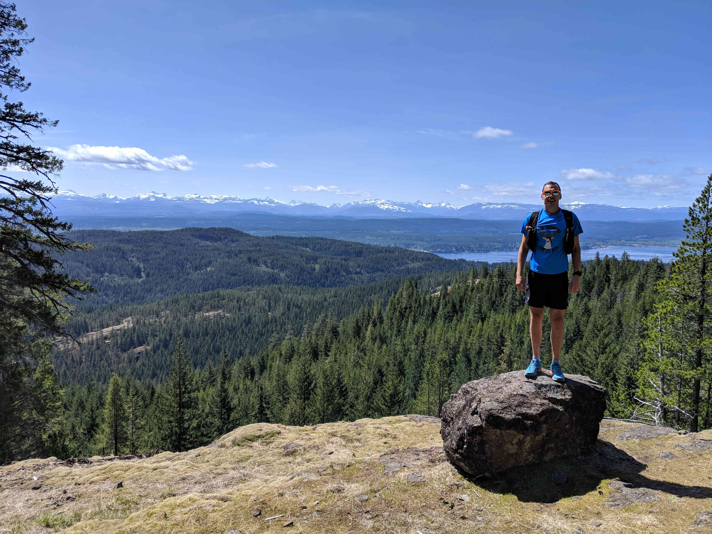

So thats a wrap for 2019! It’s been a great year that has included quite a few milestones for me. I got married, went on an amazing honeymoon to Canada (so amazing that it induced an early midlife crisis) and began the arduous process of getting on the property ladder.
Despite all that, I still managed to squeeze in a fair amount of training, ending with the following totals for the year:
The keen eyed of you will notice that my training is a bit lacking in the swimming department. There is a great reason for that... (no there isn’t).
The year kicked off with my what is now appearing to be a Knowles family tradition: the Brighton Half Marathon in February. The organisers once again put on a great event and I managed to run a PB, coming in tantalisingly close to sub 80 with a 1:20:45.
A busy lead up to my wedding in April meant that training was temporarily put on the back burner. Due to my wife and I being two completely normal people we still managed to run the Cumby trail race during our honeymoon on Vancouver Island.
After reluctantly returning to normality, I raced the Leeds Castle triathlon a month later where I swam terribly, biked averagely and phoned it in on the run. This definitely gave me a much needed kick to try and improve my swimming (or rather, actually start swimming).
Four days later I ran the JP Morgan Corporate Challenge in 19:53 for the 5.6km (3:33 min/km pace). I was pretty pleased with this considering my naive startline placement caused me to fight through huge crowds for the first 2km.
Following on from two big months on training including lots of swimming, I raced the Brighton & Hove Triathlon in September. I somewhat redeemed my poor Leeds Castle performance with a much better swim and managed to finish 3rd in the open race.
A week later I cashed in on my swim training once again and swam the Swim Serpentine, sneaking under the hour mark with a 59:28 for the 2 mile/3.2 km event. I was really happy with how it went, although my sighting and ability to swim in a straight line has room for improvement.
It was around this time that my eagerness to swim started faltering but I continued to bike and run a good amount. A week after Swim Serpentine I rode the 312km Greenwich Mean Climb audax which turned out to be a great day out.
The end of October marked the second annual Knowles family tradition where I ran the Beachy Head Marathon. I raced this with a bit of a kamikaze approach, hanging on to the front guys for as long as I could before dying a thousand deaths in the final 10km. I managed to hold out for 11th place and was pretty happy overall, but absolutely destroyed myself in the process. After quite a long period of intensity I started winding things down a bit. The race had left me pretty cooked so the following week and a bit consisted solely of easy bike commutes (and one attempted run).
My wife and I still managed to squeeze in one final event at the end of the year, having a long weekend down in Dorset to run the 56km Endurance Life Dorset Ultra (Rachel ran the 28km "half marathon"). Coming into this I had one (and only one) goal - ignore positioning and just enjoy myself. I felt like I achieved this and had a really great time with minimal suffering. Due to accidentally employing a very sensible racing strategy I somehow managed to come 6th overall!
Overall I’m really happy with how the year went. I feel like my running has come along leaps and bounds (no pun intended) and my swimming has possibly improved (although I wouldn’t know right now as I haven’t swum for weeks...).
Whilst I enjoyed myself, when I look back I was definitely an idiot inefficient with my training. I put in some big weeks during the summer, topping out with a 20 hour week and 72 hours for August, but I mostly abandoned structure in favour of the 'throw everything at the wall and see what sticks' approach. I was definitely overtraining for parts of the year, especially at the peak of summer where I went a full 9 weeks without a single day off.
A moment of clarity came whilst listening to the TrainerRoad podcast with Kona qualifier John Borton and the KonaKamps podcast with the Kona 25-29 age group champion Aaron Tomasz. Neither guests had logged crazy hours leading up to their WC qualification, instead opting for a more focused structured approach. John even mentioned that in the leadup to his 8:46 at IM Copenhagen his biggest training week was 12 hours and his average was 8-9! Obviously they are both aerobic monsters so it’s not like I could easily replicate them but it made me realise that adding structure to my week would be far better than adding more hours.
I’ve signed up for a few events in 2020. Obviously the season must start and end with the Knowles family traditions of the Brighton Half Marathon in February and the Beachy Head Marathon in October. My wife and I are also taking part in a two day rabbit-themed running event in May. 2020 will be the first time I compete in a half and full iron distance triathlon, with the Owler half-distance triathlon in June building towards the Dalesman full-distance triathlon in August.
Swimming training... needs to begin rather soon. I have well and truly fallen off the wagon but hope to join a masters squad to force me to properly train. For my cycling I am going to attempt to follow a full TrainerRoad base/build/speciality plan leading up to the event and will be following a structured running approach as well.
Let’s see how it all pans out!